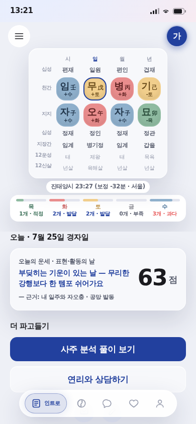
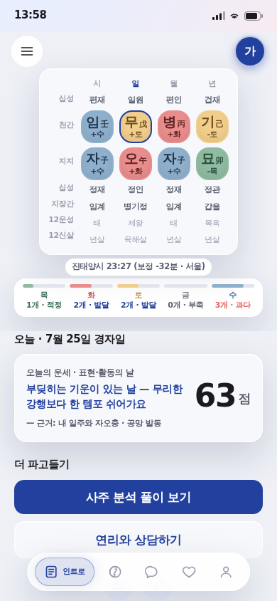
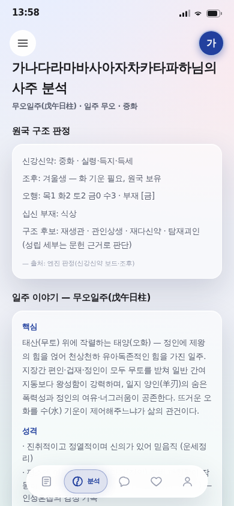

차용 기틀 적용 — Apple HIG 하한 · Liquid Glass 규칙
2026-07-25 · 지시: "레포에 uiux 따로 뽑아놓은거 있을수도 있어 봐보셈" + "기틀 같은거 찾아보고 /design 유아이 검색해서 앱 만드는 데 활용해"
한 줄
이 레포의 【바인딩】은 디자인 확립본 = 없음이었다. 그 빈칸에 Apple HIG · Liquid Glass · Material 3를 가져와 하한 3종(텍스트 11pt · 탭 44pt · 8/4 그리드)을 박고, 앱이 실제로 미달한 23곳을 고쳤다. 그리고 그 하한을 게이트로 만들었다 — 게이트가 바로 내가 놓친 1건을 잡았다.
1. 레포에 이미 있던 UIUX 산출물
| 산출물 | 내용 | 상태 |
|---|---|---|
대화형UX 카탈로그 737종docs/research/ | 전 세계 대화형·선택형 앱 737종 실데이터(앱명·카테고리·플랫폼·UX·메커닉·출처) + 결론 4절: 12 아키타입 · 훔쳐올 Top5 · 안티패턴 5 · 차별화 축 4 | 미활용분 있음 ↓§4 |
도사 대화 플레이그라운드reports/20260717_222938… | DosaChat 연출 원본 | 활용 중 |
포스텔러 스크랩forceteller-ref/ | README 251줄 + 자립 스냅샷 2 + CSS 덤프 | 활용 중 |
방식론·레퍼런스 수집함docs/ | 계승·픽토그램·통일 규율 | 활용 중 |
⚠ 미확인 1건: 목업 v2 design_handoff_명식당_앱.zip은 STATUS에 화면 정본으로 등재돼 있는데 레포에 파일이 없다. 지금 화면 값의 출처를 파일로 역추적할 수 없다.
2. 찾아온 외부 기틀
| 기틀 | 가져온 규칙·수치 |
|---|---|
| Apple HIG | 최소 텍스트 Caption 2 = 11pt · 최소 탭 타깃 44×44pt · 8pt 그리드(4pt 세분) · 원칙 = Clarity·Deference·Depth · 색은 hex가 아닌 의미 토큰으로 설계 |
| Liquid Glass (WWDC25) | 반투명 판을 두 겹 쌓지 마라 · 유리 안 버튼은 불투명 채움으로 · 컨트롤은 콘텐츠 위에 떠 있고 콘텐츠가 주인 · 유리는 장식이 아닌 기능 레이어 · 접근성(투명도 축소·고대비) 존중 |
| Material 3 | 최소 탭 타깃 48dp · 8dp 기준 그리드(아이콘·타입 4dp) |
두 시스템이 합치하는 축만 하한으로 채택했다 — 탭 44(HIG, M3보다 낮은 쪽) · 그리드 8/4 · 텍스트 11pt. 우리 앱은 이미 MUI(spacing 8px) + 44px 원형 버튼이라 구조는 맞고 하한만 새고 있었다.
3. 하한 미달 실측 → 수선
3-1 · 가독 하한(11pt) 미달 19건
| 미달 | 어디 | 처리 |
|---|---|---|
| 7.98px | 대운 레일 타일의 극성+오행 첨자(38 × 0.21) | 첨자 끔 — 아래에 십신·12운성 텍스트가 이미 있다 |
| 9.12px | 대운 레일 타일 한자(38 × 0.24) | 하한까지 clamp(뜻이 있는 내용) |
| 9.66px | 원국표 타일 극성+오행(46 × 0.21) | clamp — 색은 오행만 인코딩하고 음양(+/−)은 색으로 표현되지 않아 원국표에선 정보다 |
| 10px | 원국표 행 라벨(십성·천간·지지…) | → 11 |
| 10.5px | 출처 줄 · 12운성 · 12신살 · 열 라벨 · 오행 판정 · 준비중 배지 | → 11 |
| 9px | 대화 진행 표지 · 주제 복귀 · mini 라벨 | → 11 |




theme.ts에 tokens.minFont = 11 · tokens.minTap = 44를 근거 주석과 함께 박았다 — 값의 단일 출처다.
3-2 · 탭 타깃(44) 미달 4건
| 크기 | 어디 | 처리 |
|---|---|---|
| 50×20 · 122×20 | 로그인 하단 링크(회원가입 / 아이디·비번 찾기) | minHeight 44 + 좌우 패딩(글자 크기 무변경) |
| 88×26 | 리포트 카드 더 보기 / 접기 칩 | minHeight: tokens.minTap |
| 259×35 | 에니어그램 테스트로… · 출생 시간 입력하러… | MUI size="small"이 35px로 깎던 것 → 하한 적용 |
오탐 제외: 리스트 행 내부 텍스트(부모 행이 타깃) · 탭 라벨 span · 이름표.
4. 게이트화 — 그리고 게이트가 바로 잡아냈다
scripts/smoke.mjs에 하한 감사를 넣었다. 대표데이터(?qa=1) 3화면에서 ① 11px 미만 텍스트 0 ② 44px 미달 탭 타깃 0을 assert한다. 값은 theme.ts 토큰이 정본.
내가 놓친 MUI size="small" 케이스다. 게이트를 문장이 아니라 코드로 두는 이유가 이것 — 사람이 훑어서 놓치는 걸 기계가 커밋 전에 막는다. 수선 후 6/6 전부 통과.
5. 카탈로그가 지목했는데 아직 안 쓴 것
| 아키타입 | 카탈로그 지목 | 우리 |
|---|---|---|
| ④ 스와이프 2지선다 + 자원 미터(Reigns) | "맞아/아니야 좌우 스와이프 + 오행 게이지 실시간 반응" | 선택지는 탭만 · 게이지 반응 없음 |
| ⑥ 되감기·"X가 기억합니다"(Telltale) | "맞아/아니야가 트리 갈아탈 때 무게감" | 없음 |
| ⑨ 호감도 미터 언락(오토메) | "도사 단골이 될수록 깊은 풀이" | 없음 |
| ⑫ 스트릭·데일리(Duolingo·Finch) | "하루 한 고리·오늘의 기운" 리텐션 | 없음(인트로 오늘 점수까지) |
| ⑧ 습득폰 DB 탐색(Her Story) | "근거 팔자·오행 펼쳐보기" | 부분(근거 리포트) |
안티패턴 5개(무한 유료 게이트 · 챗봇 티 · 겁주기 · 콜드리딩 · 규제 리스크)는 현재 위반 없음.
6. 남은 것
- 유리 겹침(Liquid Glass 금지 규칙) — 감사에서 후보가 나왔지만 셸 크롬 1건이 전 화면에 잡혀 오탐 의심. 판정식 정교화 후 별건.
- 목업 v2 zip 부재 — 화면 값의 원본 파일이 레포에 없다.
- 【바인딩】 디자인 항목에 차용 기틀 등재 제안 — CLAUDE.md는 평의회 대상이라 세션이 임의 편집하지 않았다.
- 입력 문자 체크박스 · 로그인↔가입 폼 문법 2종 · 입력 3단 위저드.